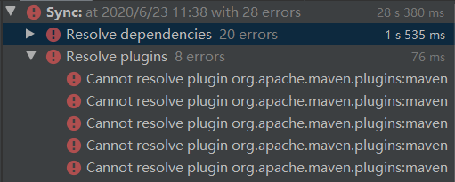
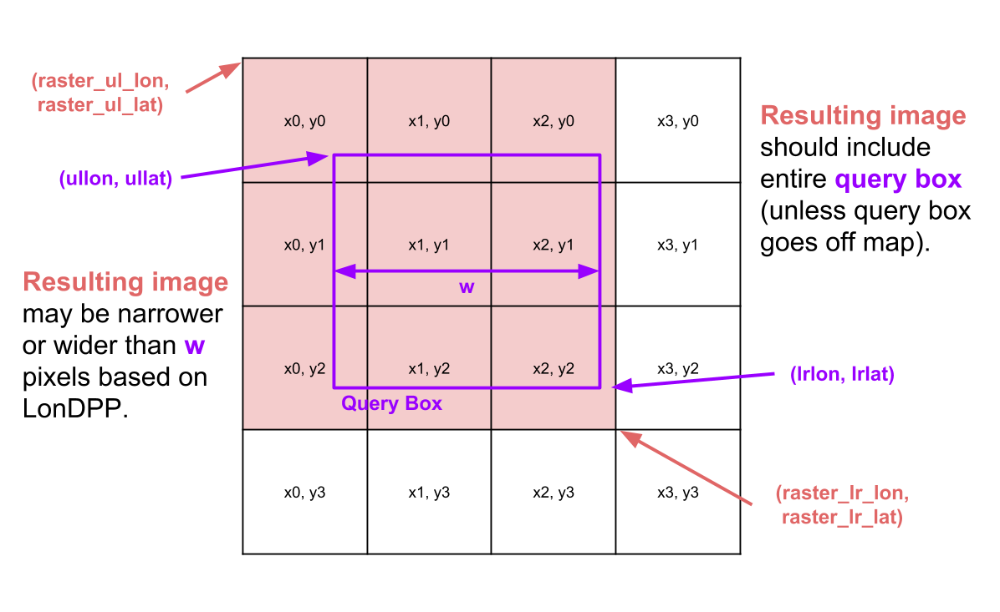
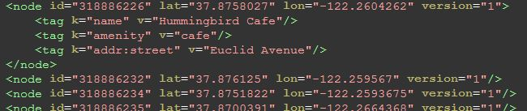
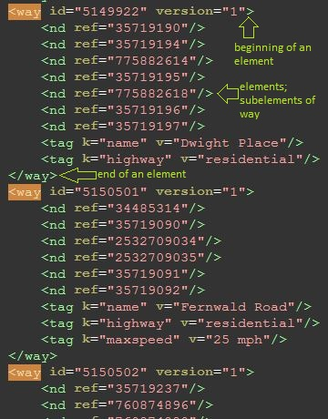
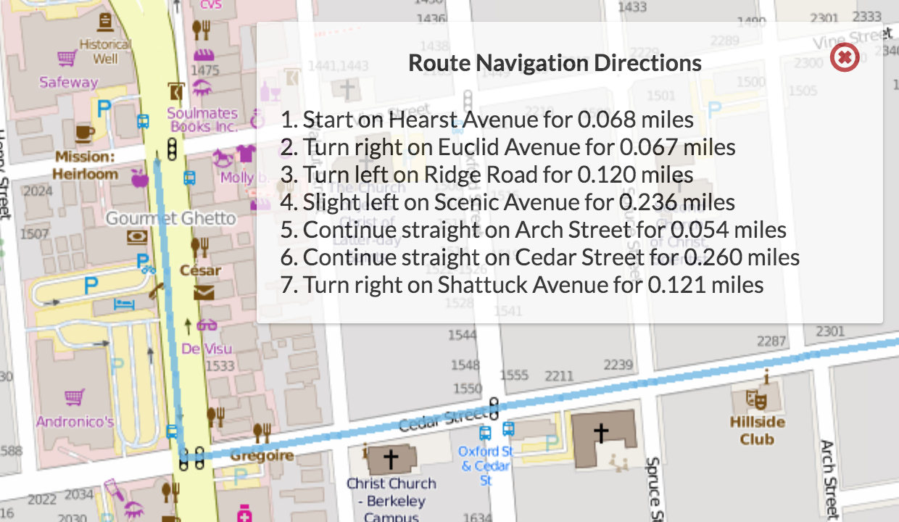
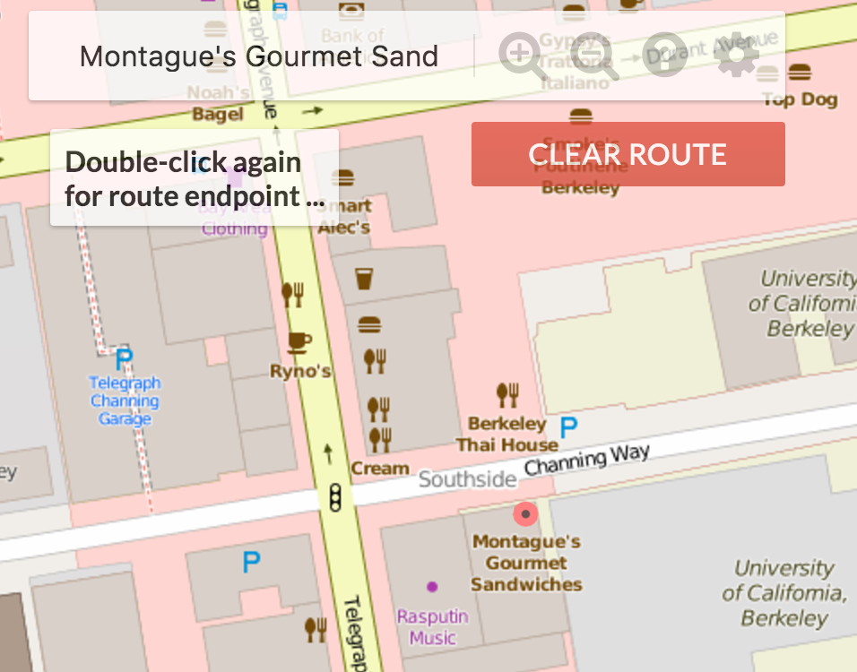
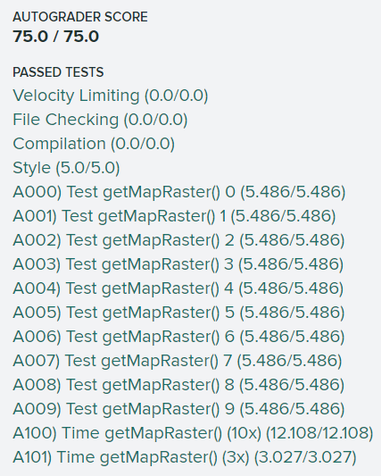
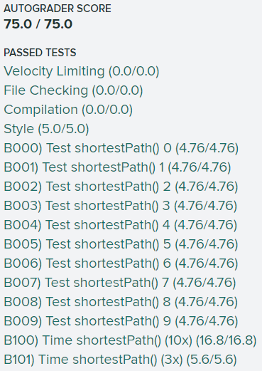
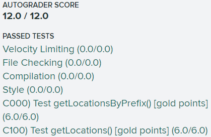
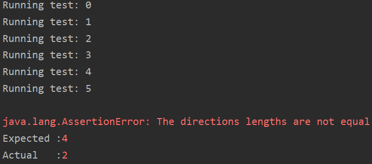

Introduction
这是CS 61B的Project
3，也是最后一个Proj。刚好上完这门课出去旅个游，放松下心情开始15213。
完成基本的要求花了5天时间，当然现在的版本还十分简陋，这个工程我是想做得比较大，后面还得抽时间消化理解、完善优化。
SP18用了Apache
Maven做项目建构工具，折腾了一天也没有配好，不知道这么垃圾的工具有啥用
，最后实在没辙就把该项目所有需要的jar包导进来，后来发现SP19就抛弃了maven。

项目需要的地图集以及地图上的点/路信息都是Google采集好的，可在这里下载，当然这个地图只是一小部分，后面想要扩展可以去下载需要的数据集，包括tile images和map
feature data。
整体需求是实现一个网页端地图，用户通过浏览器输入URL，Java程序接收，然后生成相应的地图结果并返回，在浏览器中显示。服务器框架用的是Spark，前端以及前后端交互的部分已经写好了（TA真的太强了），其实我有时候觉得这些dirty的工作比较考验码力，这些代码写得漂亮说明System的能力是挺强的。
后端至少需要实现3个类：
Rasterer
输入upper left latitude and longitude, lower right latitude and longitude, a window width, and a window height.
输出2D array of filenames corresponding to the files to be rendered.GraphDB
输入Open Street Map数据集，将其转为图存储起来：每个结点是a single intersection，每条边是一条路。Router
输入GraphDB, a starting latitude and longitude, and a destination latitude and longitude.
输出从起点到终点的一系列结点，以及路径导航信息。
Map Rastering
首先要将用户查询的真实世界的经纬度信息转为实际地图，Rasterer.java会接收用户请求的矩形参数Map<String, Double> params，生成对应的图像名称String[][]：
主要工作在getMapRaster()方法中完成，用户输入的查询请求共有6个参数：
1 | {lrlon=-122.2104604264636, ullon=-122.30410170759153, w=1085.0, h=566.0, ullat=37.870213571328854, lrlat=37.8318576119893} |
表示用户希望显示经度范围lrlon~ullon，纬度范围ullat~lrlat的区域，并且分辨率大概是w*h。
街景图采用冗余存储，所有图片都是256*256：d0_x0_y0.png是整个区域的街景，但是分辨率最低，d1_x0_y0.png/d1_x0_y1.png/d1_x1_y0.png/d1_x1_y1.png分别代表西北/东北/西南/东南四个角的街景，但是分辨率加倍。
更加规范的说：在第D个缩放级别，共有\(4^D\)张图片，dD_x0_y0.png到dD_xk_yk.png，\(k=2^D-1\)，随x增大向东移动，随y增大向南移动，我们需要返回String[][]代表用户请求区域的图片文件名矩阵，当然还有一些其他参数（查询是否成功等）：由于Java只能返回一个值，所以结果组装成Map<String, Object>返回。
1 | [[d2_x0_y1.png, d2_x1_y1.png, d2_x2_y1.png, d2_x3_y1.png], |
上述返回结果的分辨率为1024*768，几乎满足用户分辨率要求1085*556。
这样对于同一个区域，可以有很多选择：可以用更多张高分辨率图片的组合，也可以用较少几张低分辨率的图片组合，只要满足用户要求，比如对于上述例子，d2_x0_y1.png可以采用d3_x0_y2.png/d3_x1_y2.png/d3_x0_y3.png/d3_x1_y3.png代替，这样返回的图片是6*8共48张，分辨率可达2048*1536。
但这样做很可能overflow，远远超过用户要求，浪费时间和资源，因为分辨率高就意味着展示的空间小，并且前端是不会做缩放的，如果用很多高分辨率图片，浏览器会有太多太多照片加载显示，因为大家都是256*256的。
所以定义单位像素的经度距离：\(\text{LonDPP}
= \frac{\text{lower right longitude} - \text{upper left
longitude}}{\text{width of the image (or box) in
pixels}}\)，我们要展示的是小于用户要求的LonDPP的最大值，比方说用户要求每个像素2度，如果我们大于2，那么分辨率低到不能满足要求，只有小于2才能满足要求。又不能太小，分辨率太高展示范围变小。当然如果用户要求的LonDPP很低，只能用现有的最低的LonDPP图片，即d7系列。
可以将LonDPP理解为模糊程度，LonDPP越大，显示的图片越模糊，比如d0系列就有最大的LonDPP。
纬度也要做类似处理。
举例来看：d2系列共有16张图片，用户请求Query
Box应该返回9张图片：

具体实现只有1个方法public Map<String, Object> getMapRaster(Map<String, Double> params)，分2步：
- 需要的图片的
depth
全图即d0的经纬度范围是：-122.29980, 37.89220/-122.21191, 37.82280
因为地球不是规则的，但是在确定Depth时，经度方向的LonDPP满足要求即可，不需考虑纬度方向的影响。 - 确定四个角的下标
- corner case
判断输入是否合法时，边界判断一定要加EPS，不然一点小误差会崩掉程序。
输入不合法（用户拖动至全图外等），将query_success置为false返回即可。
Bug：读取图片文件时，总是javax.imageio.IOException: Can't read input file!。一般都是路径问题。
Routing & Location Data
明确了前端需要显示哪些图片后，接下来就是要建一个图，因为最后要路径规划嘛。
路由和位置数据是通过berkeley-2018.osm.xml文件给的，是整个地球数据的一部分，文件格式是OSM XML。
解析XML数据用的是SAX
Parser，遍历每个element，在每个元素的开始和结束位置，调用startElement和endElement回调函数。
先来熟悉下OSM XML文档：

node元素是组成地图的主干，有id/lat/lon等属性。如果结点是一个位置，那么tag标签就会有name，如果是其他的，比如路上的一个点，那么就没有tag。

way元素表示一条路，路上可能有很多node，用id表示。tag会包含额外信息，如果name是highway，那么v就是道路类型。假设所有道路都是双向的。
在类GraphDB中存储图，要求允许插入和删除结点，最后要用clean()清理掉没有连接的结点。
GraphBuildingHandler会解析XML文件并调用GraphDB的一些接口函数构建整个图。
如果选择邻接矩阵存储，由于这是一个动态的图，可能要增加或者删除结点，所以一开始顶点个数是不确定的，也就不能用int[][]表示。所以选择邻接表，因为有clean()操作，需要判断结点是否与其他结点相邻，邻接表速度更快。
GraphBuildingHandler每次只处理XML的一行，也就是一个标签，GraphBuildingHandler这个类可以被其它方法多次调用去处理完所有的XML，我发现这种拆分很有用，系统会变得简单，只需要考虑当前状态就很好写。清楚需求后，需要设计类的接口，数据结构和算法，这才是最难的部分。
由于parser的解析是从上到下的，所以处理way时最好不要直接把边和边上的结点直接加进图里，因为后面的highway的值可能不在合法范围内，这种边是不算的。所以在碰到边上的点，先存到一个数组里，最后endElement()时候如果路合法，再加进图里。处理node也同理，在endElement()时加入图。记得每次做完一个node或way要clear()上一个的状态信息。
每个node有一些属性（id/lat/lon），每条边也有一些属性（fromID/toID/name），所以首先要有Node类和Edge类。
邻接表的顶点表Map<Long, Node> vertex，边表Map<Long, Set<Edge>> adj。
Bug：对ArrayList等在迭代时同时进行修改就会引发异常ConcurrentModificationException。
long closest(double lon, double lat)方法会被用来找最短路，需要返回最近的有邻居的node，一个点可能没有邻居，因为他是饭店啥的，不能用来找最短路。另外，这个方法复杂度要求\(O(lgn)\)，先实现一个\(O(n)\)的做法，后续有时间再去优化吧。
Route Search
建好地图后，就要做路由工作：给定起点和终点的经纬度，选一条距离最短的路径，需要在类Router中实现shortestPath方法。
应该从距起点最近的node开始导航到距终点最近的node结束，当然这些node必须是connected的。
两个node间的距离采用great-circle
distance，即当作球模型来计算弧长距离。整体距离就是计算1-2之间、2-3之间...的距离之和，还要考虑经度和纬度有不同的尺度，并且随着纬度变化，每度代表的实际距离也是不同的，还好计算距离的函数已经由🐂🍺的TA写好了。
最好用A*而不是Dijkstra，启发函数h(n)用结点n到终点的great-circle distance就行，要注意目标不可达的情况。
开始只能在berkeley-2018-small-osm.xml上跑起来，我以为是笔记本配置太烂，跑大的数据集跑不动，只能用小的来测试，后来发现GraphDB里一行写错了。。。debug真痛苦啊！！
找到最优路线后，这里有一个optional
feature，就是显示方向导航信息Turn-by-turn
Navigation，需要在类Router中实现routeDirections方法。导航方向的表示是在Router类中写了一个新类NavigationDirection，具体的导航信息格式如下：
DIRECTION on WAY for DISTANCE miles
其中，DIRECTION有8种选择：
- “Start”
- “Continue straight”
- “Slight left/right”
- “Turn left/right”
- “Sharp left/right”
所以我们需要确定正确的DIRECTION/WAY/DISTANCE，方向取决于当前结点和上一个节点间的relative bearing：
- Between -15 and 15 degrees the direction should be “Continue straight”.
- Beyond -15 and 15 degrees but between -30 and 30 degrees the direction should be “Slight left/right”.
- Beyond -30 and 30 degrees but between -100 and 100 degrees the direction should be “Turn left/right”.
- Beyond -100 and 100 degrees the direction should be “Sharp left/right”.
难点在于：一条way上可能包含了若干node，如何在遍历node的过程中判断way是否发生了改变，只有way变化后才能产生一条新的导航信息。如果恰好来到了一条没有name的路，就将WAY设为“unknown
road”。
举例来说：
假设出发的node在“Shattuck
Avenue”这条路上，那么DIRECTION应该设为“Start”，遍历接下来的node时，需要累加在这条路上走过的距离，最终到达一个不在“Shattuck
Avenue”的node时，设置WAY为“Shattuck
Avenue”，DISTANCE为之前的累加值。接着，下一条导航信息的DIRECTION应该根据相对方位计算，WAY是当前node所在的路，DISTANCE重新累加。
最终的效果：蓝色线表示最优路线：

单元测试还是非常重要的，只有确保每一个函数都是正确的，最终组合的功能才可能正确。
Autocomplete and Search
作为一个很有用的Feature，自动补全还是很酷的：搜索地名时只输入一部分，就返回以它开头的所有地名。需要在MapServer类中实现List<String> getLocationsByPrefix(String prefix)方法。
输入的参数prefix是clean后的字符串：除了大小写字母以及空格外，其它字符全部被移除，全部由小写字母组成。
需要返回所有locations（有name的node）的全名，前提是clean后的全名与prefix匹配。
复杂度要求\(O(k)\)，k是共享同一前缀的所有地名。
比如这样：
除了自动补全，还需要完成Search功能：clean后的用户输入与clean后的locationName完全匹配，同名的location都需要加入List。
复杂度要求\(O(k)\)，k是匹配的地名个数。
需要在MapServer类中实现List<Map<String, Object>> getLocations(String locationName)方法，返回同名的所有地方的信息，如果正确实现，那么就会有一个mark标记在那个地方：

具体实现一般用Trie，这里的难点在于输入是clean后的字符串，需要输出clean前的全名，所以我们的Trie结点除了有children和isWord外，还需要保存一些额外的信息（clean前的name/id/lat/lon），当然这些信息只有叶子结点才需要保存，用List<Map<String, Object>> extraInfo来存储。这样重名的地点虽然占用了相同的叶子，但是所有地点的信息都存在了该叶子的extraInfo当中，可以直接展示出来。
Debug好痛苦啊！！有一次怎么样在浏览器都渲染不出来，折腾了一天，最后发现是因为html文件里一个js文件要FQ才可以访问，醉了。
Extensions
- Front-end Integration
现在是每调用一次，就在后台raster the entire image，然后传到前端显示。实际中前端可以缓存用过的tiles以及路线，下次调用无需后台计算。 - Vectored Tiles
现在的数据是一张张图片，实际上这些图片是可以从roads, lines, filled areas, buildings等基础矢量几何图形提取，可以用OpenGL/WebGL将其全部绘制为三角形，这样非常同一的工作就可以用GPU去做，速度比CPU要快很多，这些矢量图形可以在这里下载。 - Deploy
on Heroku
目前为止，我们的地图还只能在本地运行，下来就将它部署到服务器~
具体的部署过程可以参考上述链接，完成后APP就会部署到这里。
后续的代码更改需要rebuild jar包，然后redeploy。
TODO
做工程真是长期的活，遇到bug每天能写50行就不错了。
所有代码均已通过AG的测试：
Part I：

PART II & III：

附加Feature：

单元测试除了TestDirections外全部通过。

这个Bug真的有些诡异，不过：
尽量少用protected修饰成员变量，写一个函数接口去访问。
Reference
Project
3: Bear Maps, version 3.0
Project
2C: Bear Maps, version 4.0
a-star